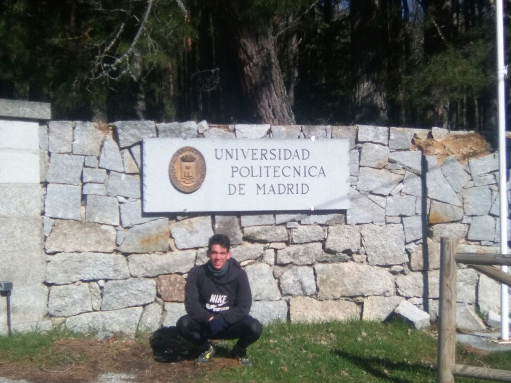
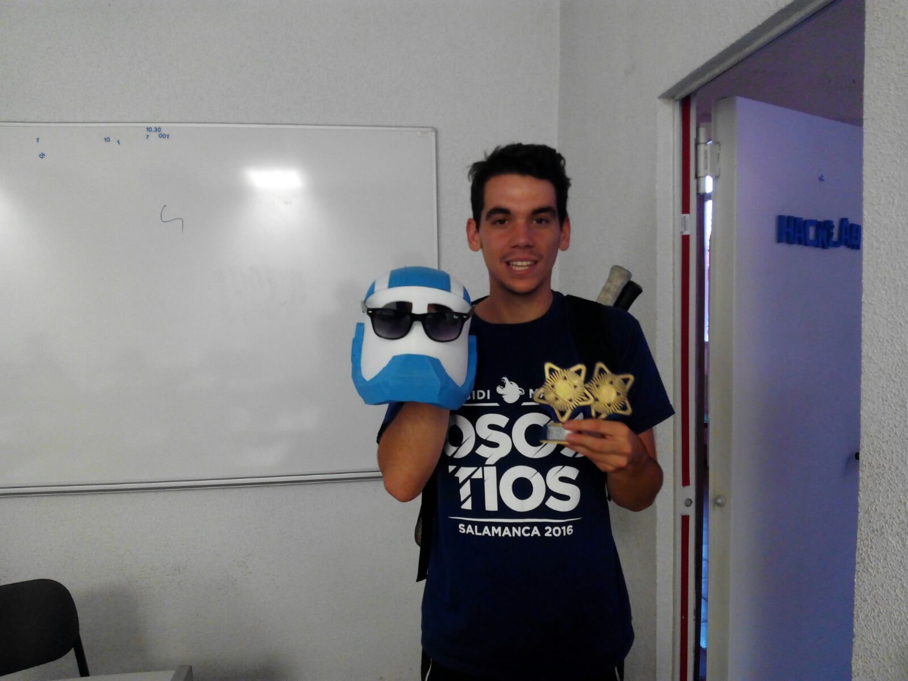
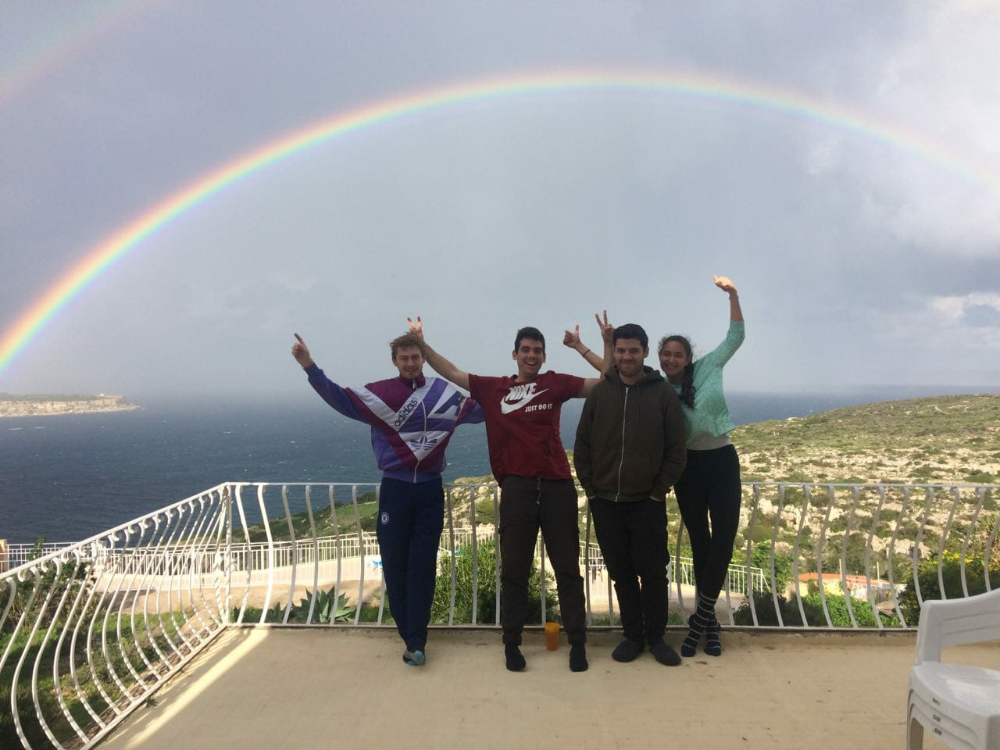

After a good childhood in the fields, it was my time to move to the big city. I got into UPM (Universidad Politécnica de Madrid) to study Electronic and Automatic Industrial Engineering
Lucky me, I got sponsored to do an online MSC in Data Science and Artificial Intelligence. It was nice, but not what I expected, easily replaced by Youtube
I was sick the day we got the trophies, don't judge my face
I have done a lot of volunteering, but Malta was the best one. I got the chance to develop a project to handcraft instruments made by trash, and spent a couple months enjoying the views
I got the national tennis teacher license from RFET, did a quarterly exchange in Ames, Iowa, and some other titles that may be interesting for nobody.